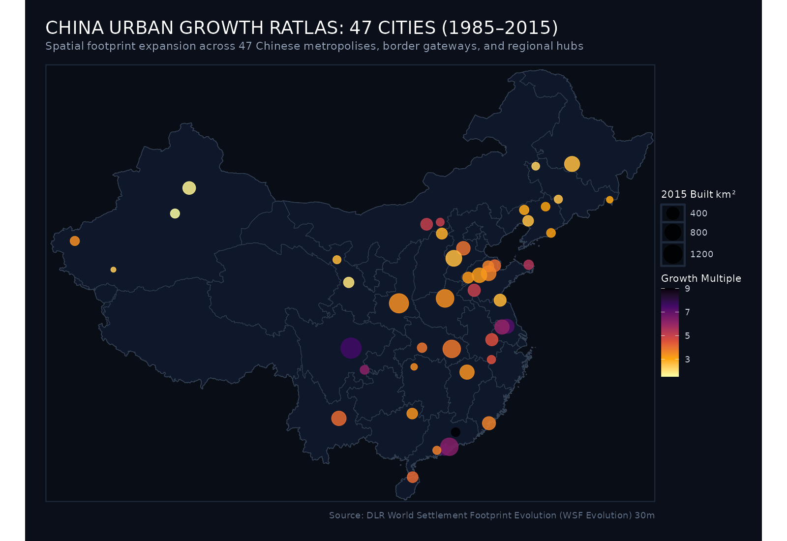
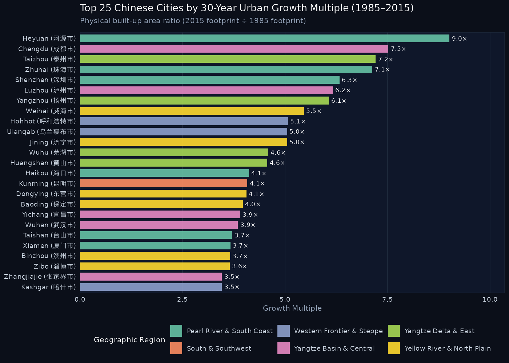

China Urban Growth Ratlas (1985–2015)
A Geospatial Exploration of 30 Years of Physical Expansion Across 47 Chinese Metropolises
Key Findings & National Overview
Total Cities Analyzed
47
Median Growth Multiple
4.1×
Peak Growth Multiple
9.0×
Peak Area Expansion
+1,356 km²
Satellite Data Resolution
30 meters
National Urban Expansion Map
The map below displays all 47 cities in the ratlas across China, sized by their 2015 built-up area (\(km^2\)) and colored by their 30-year growth multiplier:

National Growth Multiplier Rankings
Which cities experienced the highest relative spatial expansion between 1985 and 2015?

Regional Explorations
Explore the atlas by geographic macro-regions:
Pearl River & South Coast
Special Economic Zones, export engines, and coastal reclaimers. - Cities: Shenzhen, Zhuhai, Xiamen, Haikou, Taishan, Heyuan Explore Region →
Yangtze Basin & Central
Inland megacities and riverine industrial corridors. - Cities: Chengdu, Wuhan, Luzhou, Yichang, Nanchang, Zhangjiajie Explore Region →
Yangtze Delta & East
Interconnected manufacturing clusters and canal towns. - Cities: Taizhou, Yangzhou, Wuhu, Huangshan, Lianyungang Explore Region →
Yellow River & North Plain
Heavy industrial centers across the agricultural heartland. - Cities: Jinan, Zhengzhou, Baoding, Shijiazhuang, Zibo… Explore Region →
Northeast Rust Belt
Early industrial powerhouses and international border gateways. - Cities: Harbin, Dandong, Fuxin, Panjin, Tieling, Hunchun… Explore Region →
Western Frontier & Steppe
Silk Road oasis towns, highland capitals, and desert gateways. - Cities: Xi’an, Lanzhou, Urumqi, Kashgar, Hotan, Hohhot… Explore Region →
Complete 47-City Master Index
| Rank | City | Chinese | Province | Region | 1985 Area | 2015 Area | Net Gain | Multiplier | CAGR |
|---|---|---|---|---|---|---|---|---|---|
| #1 | Heyuan | 河源市 | Guangdong | Pearl River & South Coast | 15.15 km² | 136.49 km² | +121.34 km² | 9.01× | 7.6% |
| #2 | Chengdu | 成都市 | Sichuan | Yangtze Basin & Central | 208.06 km² | 1564.15 km² | +1356.09 km² | 7.52× | 6.96% |
| #3 | Taizhou | 泰州市 | Jiangsu | Yangtze Delta & East | 80.81 km² | 583 km² | +502.19 km² | 7.21× | 6.81% |
| #4 | Zhuhai | 珠海市 | Guangdong | Pearl River & South Coast | 33.27 km² | 237.12 km² | +203.85 km² | 7.13× | 6.77% |
| #5 | Shenzhen | 深圳市 | Guangdong | Pearl River & South Coast | 168.35 km² | 1064.98 km² | +896.63 km² | 6.33× | 6.34% |
| #6 | Luzhou | 泸州市 | Sichuan | Yangtze Basin & Central | 22.7 km² | 140.03 km² | +117.33 km² | 6.17× | 6.25% |
| #7 | Yangzhou | 扬州市 | Jiangsu | Yangtze Delta & East | 98.97 km² | 600.99 km² | +502.02 km² | 6.07× | 6.2% |
| #8 | Weihai | 威海市 | Shandong | Yellow River & North Plain | 32.87 km² | 179.59 km² | +146.72 km² | 5.46× | 5.82% |
| #9 | Hohhot | 呼和浩特市 | Inner Mongolia | Western Frontier & Steppe | 68.88 km² | 349.27 km² | +280.39 km² | 5.07× | 5.56% |
| #10 | Jining | 济宁市 | Shandong | Yellow River & North Plain | 77.41 km² | 391.12 km² | +313.71 km² | 5.05× | 5.55% |
| #11 | Ulanqab | 乌兰察布市 | Inner Mongolia | Western Frontier & Steppe | 20.59 km² | 103.9 km² | +83.31 km² | 5.05× | 5.54% |
| #12 | Wuhu | 芜湖市 | Anhui | Yangtze Delta & East | 82.97 km² | 380.45 km² | +297.48 km² | 4.59× | 5.21% |
| #13 | Huangshan | 黄山市 | Anhui | Yangtze Delta & East | 26.02 km² | 118.96 km² | +92.94 km² | 4.57× | 5.2% |
| #14 | Haikou | 海口市 | Hainan | Pearl River & South Coast | 63.84 km² | 262.73 km² | +198.89 km² | 4.12× | 4.83% |
| #15 | Kunming | 昆明市 | Yunnan | South & Southwest | 153.06 km² | 624.84 km² | +471.78 km² | 4.08× | 4.8% |
| #16 | Dongying | 东营市 | Shandong | Yellow River & North Plain | 83.9 km² | 341.04 km² | +257.14 km² | 4.06× | 4.79% |
| #17 | Baoding | 保定市 | Hebei | Yellow River & North Plain | 132.36 km² | 526.12 km² | +393.76 km² | 3.97× | 4.71% |
| #18 | Yichang | 宜昌市 | Hubei | Yangtze Basin & Central | 45.63 km² | 178.59 km² | +132.96 km² | 3.91× | 4.65% |
| #19 | Wuhan | 武汉市 | Hubei | Yangtze Basin & Central | 279.63 km² | 1077.9 km² | +798.27 km² | 3.85× | 4.6% |
| #20 | Taishan | 台山市 | Guangdong | Pearl River & South Coast | 30.28 km² | 112.33 km² | +82.05 km² | 3.71× | 4.47% |
| #21 | Xiamen | 厦门市 | Fujian | Pearl River & South Coast | 128.93 km² | 473.04 km² | +344.11 km² | 3.67× | 4.43% |
| #22 | Binzhou | 滨州市 | Shandong | Yellow River & North Plain | 75.53 km² | 276.66 km² | +201.13 km² | 3.66× | 4.42% |
| #23 | Zibo | 淄博市 | Shandong | Yellow River & North Plain | 180.8 km² | 660.67 km² | +479.87 km² | 3.65× | 4.41% |
| #24 | Kashgar | 喀什市 | Xinjiang | Western Frontier & Steppe | 46.39 km² | 160.73 km² | +114.34 km² | 3.46× | 4.23% |
| #25 | Zhangjiajie | 张家界市 | Hunan | Yangtze Basin & Central | 18.13 km² | 62.73 km² | +44.6 km² | 3.46× | 4.22% |
| #26 | Xi’an | 西安市 | Shaanxi | Western Frontier & Steppe | 392.14 km² | 1354.03 km² | +961.89 km² | 3.45× | 4.22% |
| #27 | Zhengzhou | 郑州市 | Henan | Yellow River & North Plain | 315.56 km² | 1084.55 km² | +768.99 km² | 3.44× | 4.2% |
| #28 | Nanchang | 南昌市 | Jiangxi | Yangtze Basin & Central | 178.79 km² | 608.57 km² | +429.78 km² | 3.4× | 4.17% |
| #29 | Guilin | 桂林市 | Guangxi | South & Southwest | 76.14 km² | 254.1 km² | +177.96 km² | 3.34× | 4.1% |
| #30 | Liaocheng | 聊城市 | Shandong | Yellow River & North Plain | 86.36 km² | 279.69 km² | +193.33 km² | 3.24× | 3.99% |
| #31 | Jinan | 济南市 | Shandong | Yellow River & North Plain | 200.11 km² | 647.13 km² | +447.02 km² | 3.23× | 3.99% |
| #32 | Dandong | 丹东市 | Liaoning | Northeast Rust Belt | 45.2 km² | 140.92 km² | +95.72 km² | 3.12× | 3.86% |
| #33 | Tieling | 铁岭市 | Liaoning | Northeast Rust Belt | 43.68 km² | 134.96 km² | +91.28 km² | 3.09× | 3.83% |
| #34 | Hunchun | 珲春市 | Jilin | Northeast Rust Belt | 20.56 km² | 61.52 km² | +40.96 km² | 2.99× | 3.72% |
| #35 | Fuxin | 阜新市 | Liaoning | Northeast Rust Belt | 57.66 km² | 169.39 km² | +111.73 km² | 2.94× | 3.66% |
| #36 | Datong | 大同市 | Shanxi | Yellow River & North Plain | 99.39 km² | 279.67 km² | +180.28 km² | 2.81× | 3.51% |
| #37 | Lianyungang | 连云港市 | Jiangsu | Yangtze Delta & East | 135.75 km² | 369.04 km² | +233.29 km² | 2.72× | 3.39% |
| #38 | Wuwei | 武威市 | Gansu | Western Frontier & Steppe | 40.73 km² | 108.55 km² | +67.82 km² | 2.67× | 3.32% |
| #39 | Shijiazhuang | 石家庄市 | Hebei | Yellow River & North Plain | 307.22 km² | 811.55 km² | +504.33 km² | 2.64× | 3.29% |
| #40 | Harbin | 哈尔滨市 | Heilongjiang | Northeast Rust Belt | 267.74 km² | 701.48 km² | +433.74 km² | 2.62× | 3.26% |
| #41 | Panjin | 盘锦市 | Liaoning | Northeast Rust Belt | 98.33 km² | 254.37 km² | +156.04 km² | 2.59× | 3.22% |
| #42 | Liaoyuan | 辽源市 | Jilin | Northeast Rust Belt | 44.37 km² | 111.94 km² | +67.57 km² | 2.52× | 3.13% |
| #43 | Hotan | 和田市 | Xinjiang | Western Frontier & Steppe | 19.4 km² | 46.43 km² | +27.03 km² | 2.39× | 2.95% |
| #44 | Baicheng | 白城市 | Jilin | Northeast Rust Belt | 43.41 km² | 98.62 km² | +55.21 km² | 2.27× | 2.77% |
| #45 | Lanzhou | 兰州市 | Gansu | Western Frontier & Steppe | 119.22 km² | 232.72 km² | +113.5 km² | 1.95× | 2.25% |
| #46 | Urumqi | 乌鲁木齐市 | Xinjiang | Western Frontier & Steppe | 251.96 km² | 431.36 km² | +179.4 km² | 1.71× | 1.81% |
| #47 | Korla | 库尔勒市 | Xinjiang | Western Frontier & Steppe | 102.96 km² | 156.53 km² | +53.57 km² | 1.52× | 1.41% |
China Urban Growth Ratlas · Built with R (terra, sf, ggplot2, tidyterra, patchwork) and Quarto. Data: German Aerospace Center (DLR) World Settlement Footprint Evolution (30m) & GADM 4.1.